ヨーロッパの誕生②（ビザンツ・東欧）
西ヨーロッパがゲルマン人の大移動によって混乱する中、東方ではローマ帝国の系譜を継ぐ「ビザンツ帝国（東ローマ帝国）」が1000年近く存続し、独自の文化を築きました。また、その影響を受けた東欧の諸民族（スラヴ人など）やロシアが、ギリシア正教を受容しながら新たな国家を形成していきます。
1. ビザンツ帝国（生き残った千年の帝国）
330年、コンスタンティヌス帝が遷都したコンスタンティノープル（現イスタンブル）を首都とする東ローマ帝国は、395年の東西分裂後も、西欧の混乱をよそに長く繁栄を続けました（ビザンツ帝国と呼ばれます）。
帝国の最大版図を実現しました。
- 対外遠征：北アフリカのヴァンダル王国、イタリアの東ゴート王国を次々に滅ぼし、地中海周辺を回復しました。
- 内政・文化：法学者トリボニアヌスに命じて『ローマ法大全』を編纂させました。また、首都に大円蓋（ドーム）をもつビザンツ様式の代表建築ハギア・ソフィア聖堂を建立し、中国から養蚕の技術を導入しました。
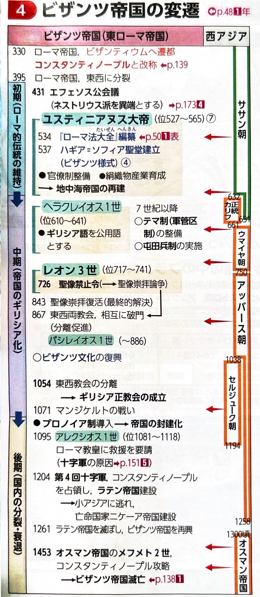
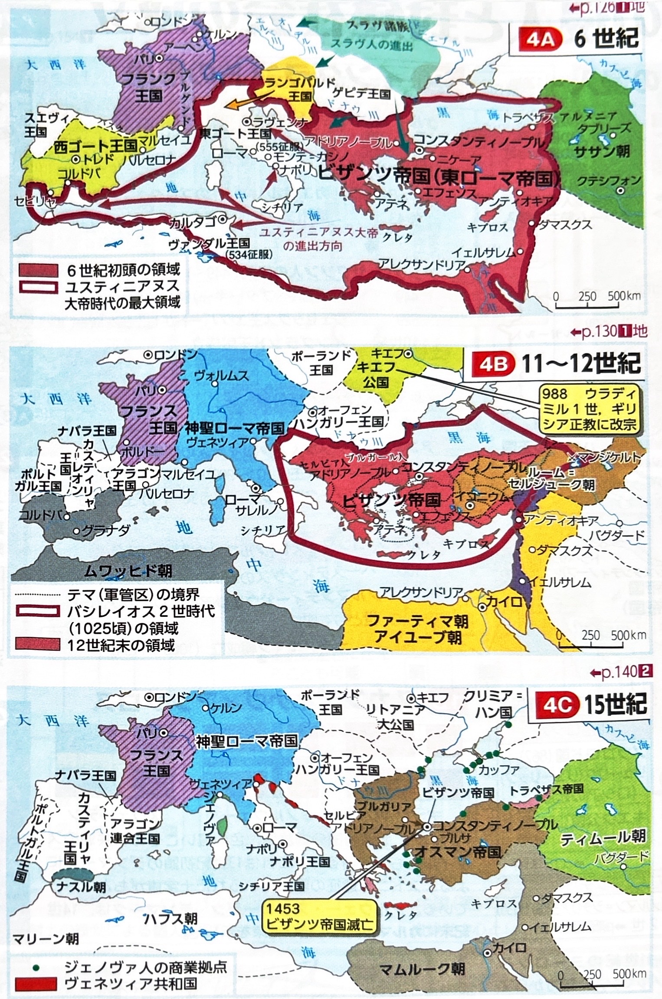
【制度と社会の変化】
- テマ制（軍管区制）と屯田兵制：7世紀以降、ササン朝やイスラーム勢力の圧迫に備えるため、帝国を軍管区に分け、農民に土地を与える代わりに軍役を課す防衛体制を整えました。
- プロノイア制：11世紀以降、テマ制が崩れると、台頭した地方貴族に国有地の管理権（プロノイア）を与えて軍役を果たす制度へと変化し、封建化と皇帝権の衰退を招きました。
【宗教対立と滅亡】
ビザンツ皇帝は、教会の首長も兼ねる強い権力を持っていました。
- 聖像禁止令（726年）：皇帝レオン3世が発布。偶像崇拝を厳しく否定するイスラーム勢力への対抗などの理由から出されましたが、ゲルマン人への布教に聖像（イコン）を用いていたローマ教会が猛反発し、東西教会の対立が激化しました。（結果的に1054年に東西教会は相互破門に至ります）
- 帝国の滅亡：11世紀にセルジューク朝の圧迫を受け（マンジケルトの戦い）、皇帝アレクシオス1世がローマ教皇に救援を要請したことが十字軍の契機となりました。しかし、1204年の第4回十字軍によって首都を占領され一時滅亡。その後再建されましたが、1453年にオスマン帝国（メフメト2世）の攻撃を受けて最終的に滅亡しました。
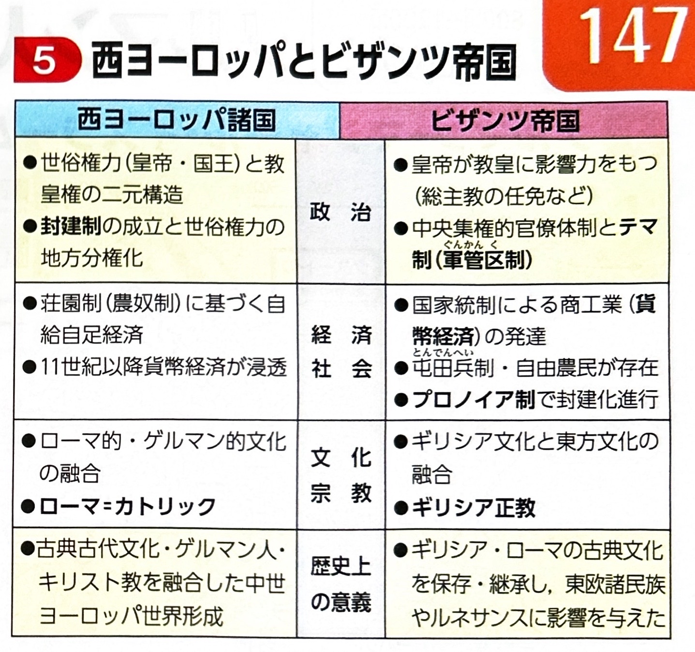
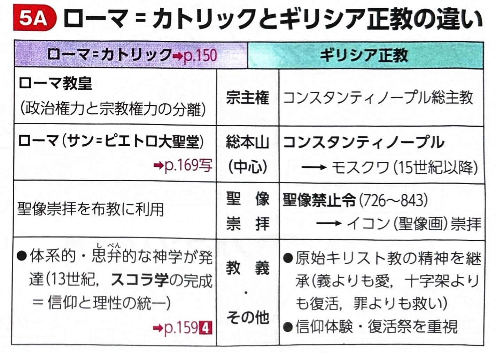
2. 東欧の諸民族と宗教の分布
東欧にはインド・ヨーロッパ語系のスラヴ人などが広がり、西からはカトリックが、南からはギリシア正教が布教され、国によって信仰が分かれました。「どの民族・国が、どちらの宗教を受容したか」が頻出ポイントです。
| 系統と宗教 | 代表的な民族と国家・特徴 |
|---|---|
| 西スラヴ人 【カトリック】 |
・ポーランド人：14世紀にカジミエシュ大王のもとで繁栄。その後、ドイツ騎士団に対抗するためリトアニア大公国と合体し、ヤゲウォ朝（リトアニア・ポーランド王国）を成立させました。 ・チェック人：ボヘミア王国（現チェコ）を建国。 ・スロヴァキア人 |
| 南スラヴ人 【宗教が分かれる】 |
・クロアティア人・スロヴェニア人：フランク王国の影響で【カトリック】を受容。 ・セルビア人：ビザンツ帝国の影響で【ギリシア正教】を受容。14世紀にバルカン半島の覇権を握るが、のちオスマン帝国に敗北（コソヴォの戦い）。 ・ブルガリア人：もとはアジア系だがスラヴ化。第1次・第2次ブルガリア帝国を建国。【ギリシア正教】を受容。 |
| その他の民族 |
・マジャール人：ウラル語系（アジア系）。オットー1世に敗れた後、ハンガリー王国を建国し、【カトリック】を受容。 ・ルーマニア人：古代ローマ人の血を引く【ラテン系】。 |

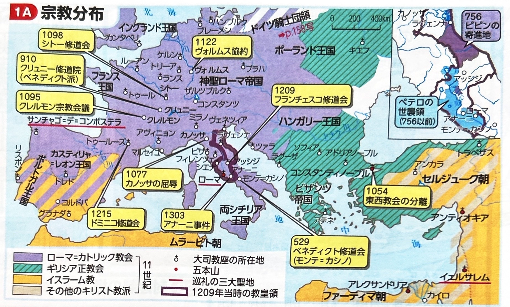
3. ロシアの形成（キエフ公国からモスクワへ）
現在のロシア・ウクライナ地域では、東スラヴ人が住む地に北欧からノルマン人（ルーシ）が進出して建国し、次第にスラヴ化していきました。
ノルマン人のリューリクがノヴゴロド国を建て、その後一族が南下してキエフ公国を建設しました。
10世紀末、キエフ公国の最盛期を築いたウラディミル1世は、ビザンツ皇帝の妹を妃に迎え、国教として【ギリシア正教】に改宗しました。
バトゥ率いるモンゴル軍の侵入を受け、キプチャク・ハン国（ジョチ・ウルス）の支配下に入りました。この約250年にわたる支配を、ロシア史では「タタールのくびき」と呼びます。
モスクワ大公国のイヴァン3世が、1480年にモンゴルの支配から自立しました。彼は滅亡したビザンツ帝国の最後の皇帝の姪と結婚し、ロシアの君主として初めて「ツァーリ（皇帝）」の称号を用い、モスクワを「第3のローマ」と自任しました。
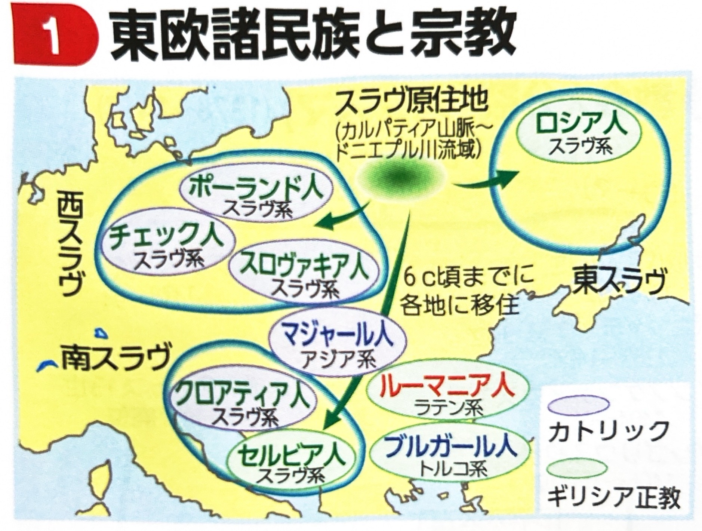
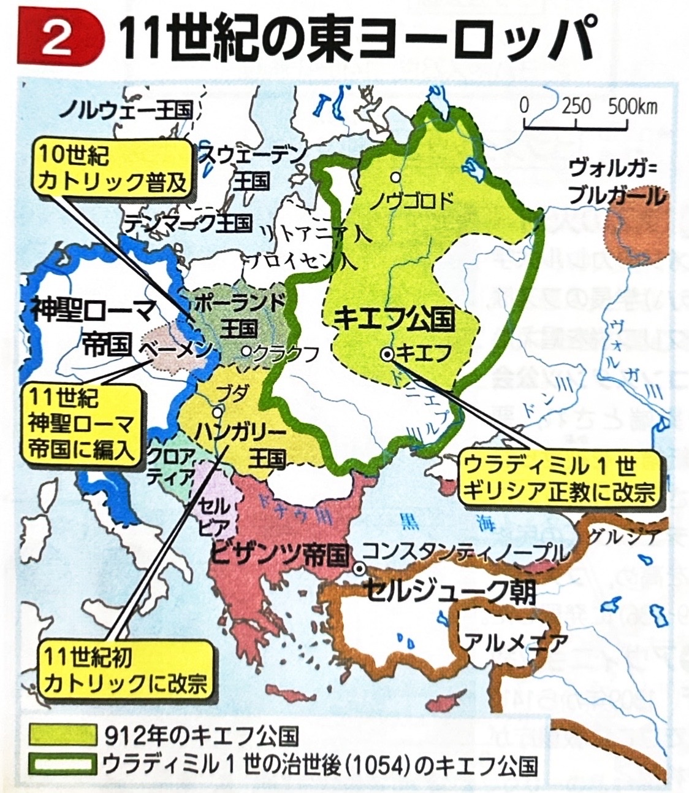
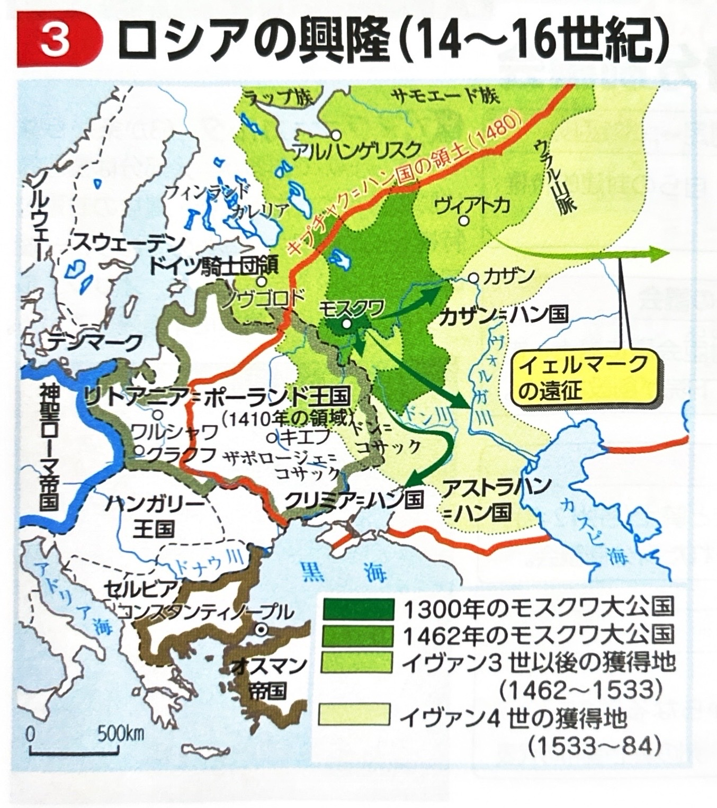
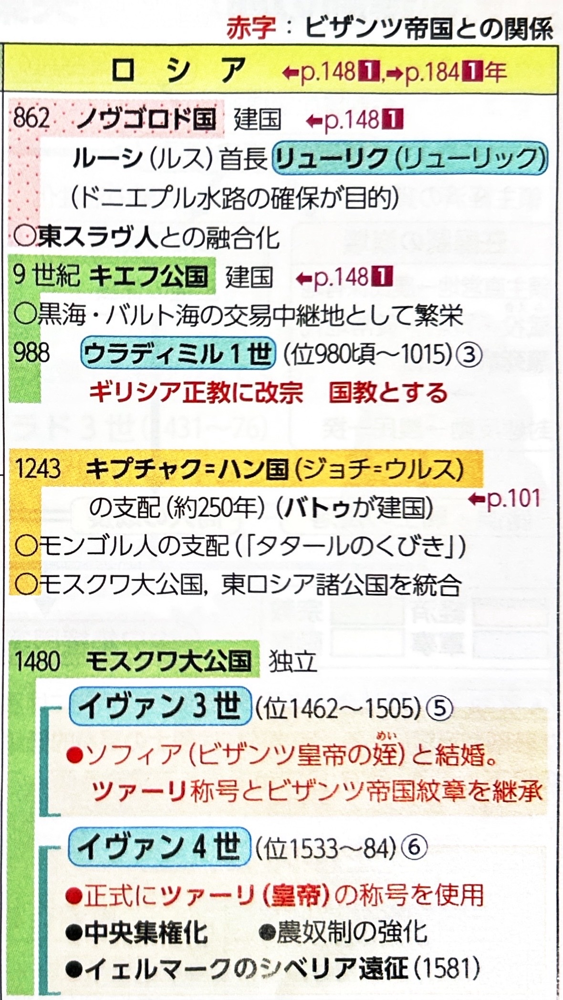
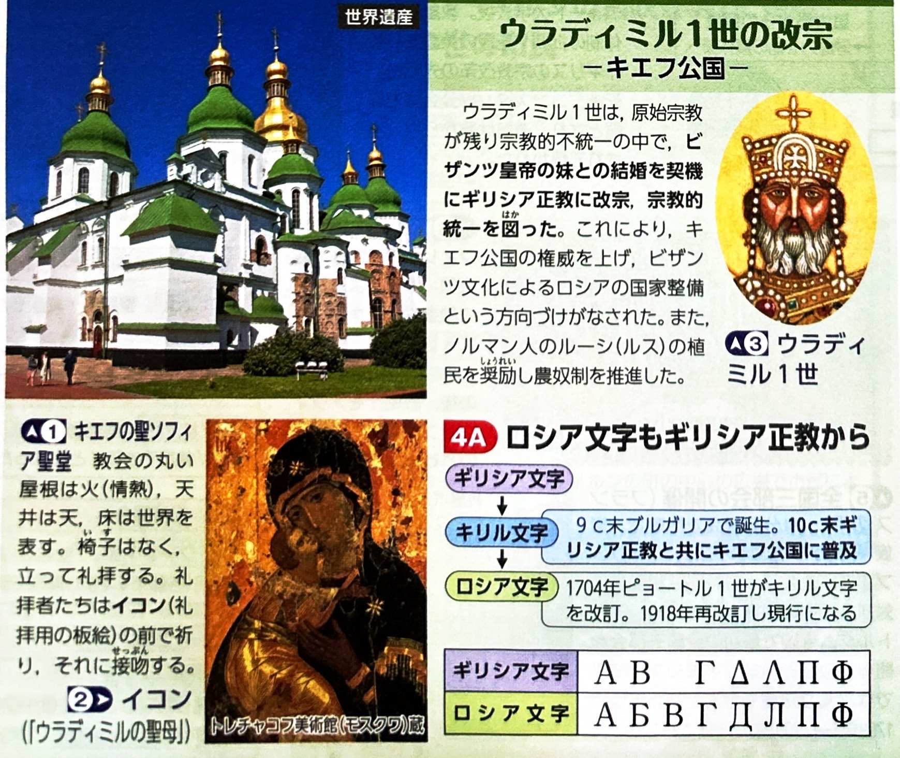
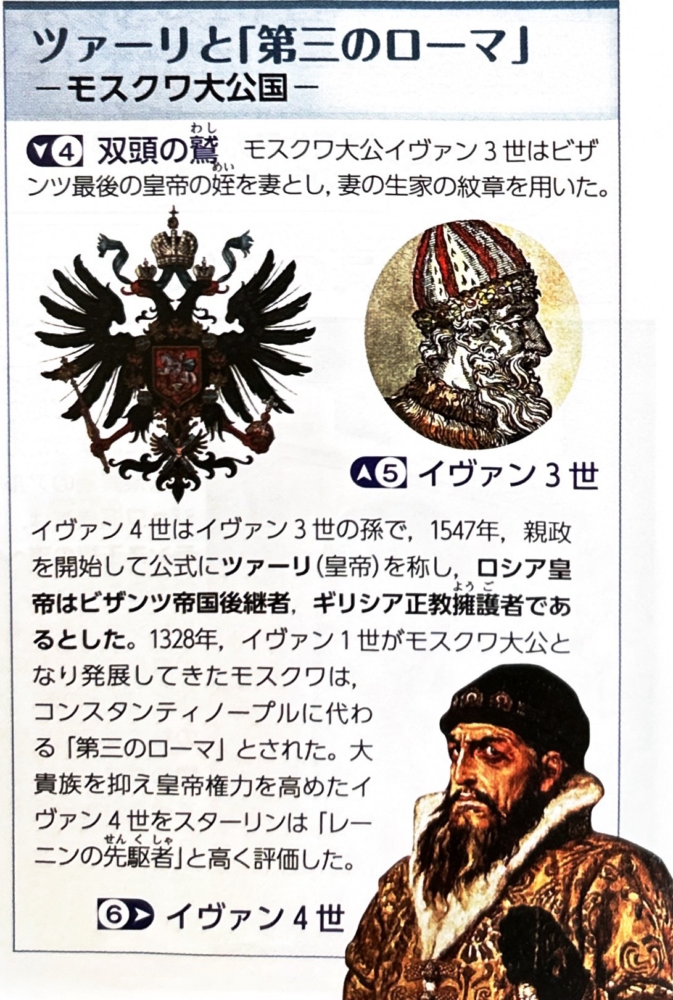